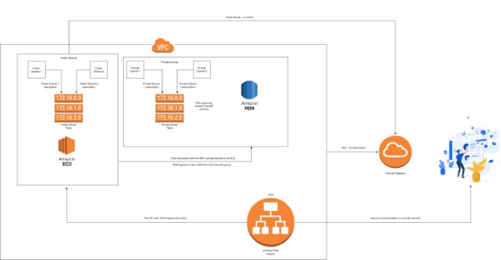

Unlocking HIPAA: Protecting Healthcare Data
Client Success Story: Pharmacy Saving Advisor Uncovering Lowest Medication Costs
Introduction:
In this transformative project, we tackle the challenge of creating a HIPAA-compliant cloud architecture on AWS. Our mission is to develop an innovative CloudFormation template for seamless future deployments, unlocking the full potential of AWS's database, compute, and storage services. Join us as we craft a secure and high-performance ecosystem, redefining the landscape of healthcare solutions.
Problem Statement:
In this captivating project, we take on the challenge of crafting a HIPAA-compliant cloud architecture on the powerful AWS platform. Our mission is to create an innovative CloudFormation template for seamless future deployments, unleashing the full potential of AWS's database, compute, and storage services.
Envision a captivating UI framework, Frappe, hosted on a custom domain from our esteemed client. Witness the magic as we orchestrate traffic flow using AWS ALB services, ensuring a flawless user experience. Adhering to the project's vision, we implement traffic controls, bot detection, allowing access solely from the USA.
Join us as we connect the dots, skillfully linking the Frappe framework with an AWS RDS MariaDB instance. Marvel at the expertise required to configure RDS, S3 and Frappe parameters, harmonizing their functions for unrivaled performance.
Project Tenure: 1 Month
Solution:
The client already had the codebase partially set up on GitHub, and we needed to make use of the same GitHub repository for both the YAML files and the deployment of the code pipeline. The proposed architecture should be designed to handle millions of requests per day and leverage various AWS components to ensure optimal performance and scalability. Some of the AWS components that can be considered, but not limited to, are:
- S3 bucket
- IAM roles and policies
- EC2 with Auto Scaling
- Application Load Balancer and HTTP/HTTPS listener
- SSM Parameters
- VPC / Subnets / Security groups
- Internet gateway / Routes and Route tables
- RDS with Auto scaling.
- CICD: AWS Cloud Formation, Terraform and Serverless
- DNS Monitoring with Cloudwatch Synthetics
Architecture Explanation:

Embarking on an AWS adventure, we crafted a groundbreaking architecture with two distinct environments - Dev and Prod, all within the same AWS account. Our client's vision was clear - zero dependencies between these environments, and we delivered in style.
Picture a seamless virtual private cloud (VPC) housing the deployed resources, where innovation knows no bounds. Our team expertly navigated networking options, ensuring the perfect blend of security and performance. Witness the magic as we weave a tale of scalability and fault tolerance, where Dev and Prod coexist harmoniously, yet independently.
Join us as we redefine the limits of AWS capabilities, transforming our client's vision into a reality of dynamic and autonomous cloud ecosystems.
Resources in Each Environment:
- A Public subnet and A Private subnet in the VPC
- An Internet Gateway
- 2 route tables – public and private
- Route table associations
- Internet gateway associations
- Security groups for EC2 and RDS, to manage access to both of them independently
- Application Load Balancer
- HTTP/HTTPS listener for ALB
- EC2
- IAM Based permission control
- RDS
- S3 bucket for Frappe integration with S3.
- S3 bucket for Cloud Formation stack
- Code Build and Code Pipeline with GitHub Integration
- Code deploy agent and SSM parameter store.
- Networking permissions between resources inside VPC
- The Internet gateway is attached to the created VPC for any internet connectivity required by any of the services.
- Cloudwatch Synthetics to Monitor the URL
Conclusion:
Unlocking the full potential of AWS, we harnessed the remarkable UserData functionality of EC2 to work wonders! Picture this - a magical setup where dependencies are effortlessly installed, and users are created within the EC2 machine.
Imagine an EC2 instance bursting to life, already equipped with everything needed to host the Frappe framework. The genius doesn't stop there! We incorporated a one-shot installation for specific Frappe components, orchestrated through a seamless bash script transported directly to the EC2 via the GitHub repository using the code deploy agent.
Behold the synergy of technology as we paint a masterpiece of automation, delivering an awe-inspiring cloud experience that's bound to leave you spellbound!